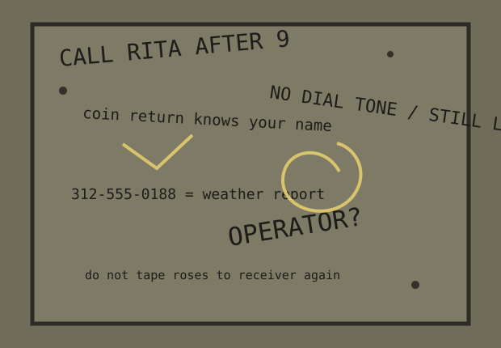

A phone booth collected marks because it gave people forty square inches of privacy in public. Most inscriptions are instructions: call, wait, forgive, do not answer.

Composite panel, redrawn from scratches and marker ghosts. Private names shortened where necessary.
CALL RITA AFTER 9
coin return knows your name
NO DIAL TONE / STILL LISTEN
312-555-0188 = weather report
OPERATOR?
do not tape roses to receiver again
[below shelf, pencil]
if you are reading this while crying, breathe before deposit
The weather-report number uses the 555 exchange block here by policy. The original had seven digits and a smear of lipstick through the last two.